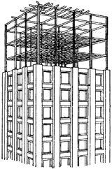
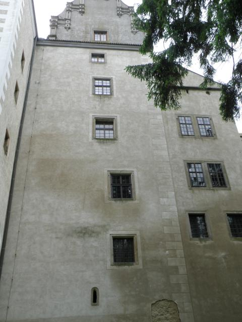
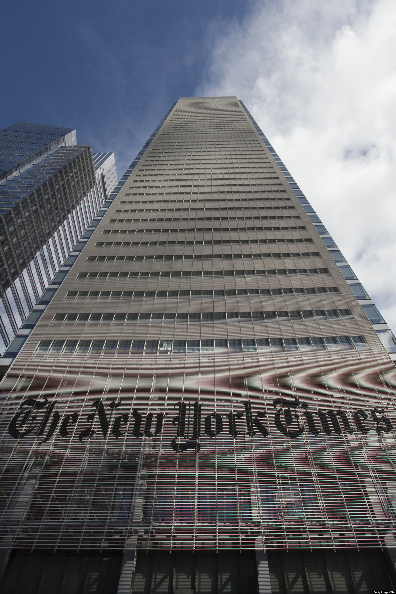
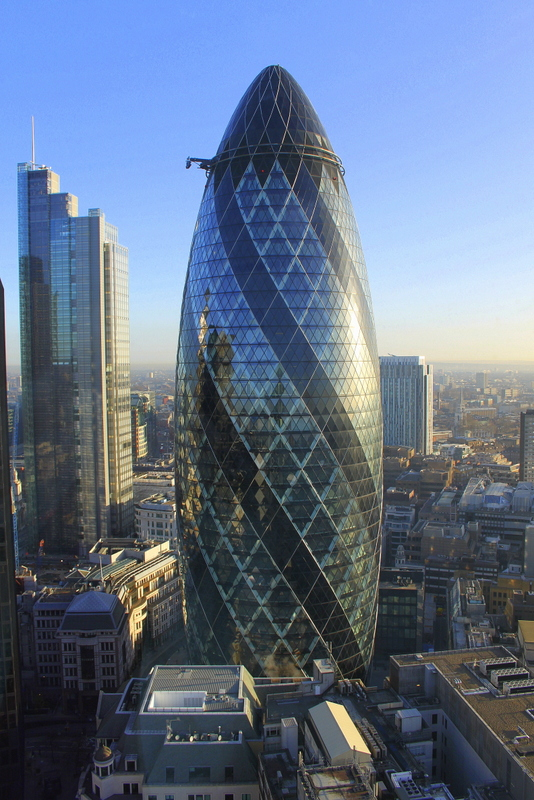

CSS
So what's the difference between static, relative, absolute, and fixed positioning?
1/17/2016
This concept is one that seems to confuse beginners and experts alike. Let's explore the position property using windows of buildings to help us understand!
Static position is the default position of each element whether that is a block or inline element. This property is typically only used when trying to negate other position changes made in the CSS since it's always the default. On our skyscraper, each floor will have windows one after another without any other defining characteristics so these can be considered statically positioned.
Relative position is the position of an element in relation to itself. So if all of the elements were supposed to be lined up evenly, you could set one to be uneven. On the building below the two large windows on the top are centered and lined up with one another. The two large windows on the bottom are offset to the right of where they would normally be so they are relatively positioned.
Absolute position allows you to place an element exactly where you want it on the page without affecting the other elements. On our skyscraper, we're showing the name of the company absolutely placed without consideration for the the windows or styling behind it.
Fixed position will allow you to place an element in relation to what you see on the page from a browser window. This allows you to keep an element in the same place all the time. No matter how you look at the middle of the building below, the dark stripes will always be in the same place from your viewpoint.
